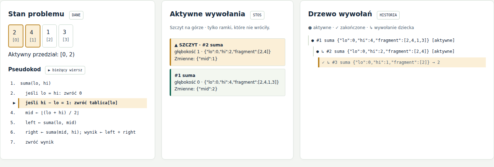

ASD1-M1-14 · MINI-PROJEKT M1
Zobacz wywołanie.
Przewidź powrót.
Odbiorca: student poznający rekurencję.
Stos: co jeszcze pracuje?
Drzewo: co zostało wywołane?
Cel: umieć przewidzieć następny krok na nowych danych.
0–16 liczb · −20…20
pusty fragment = 0
Dwa warianty · a: −10…10
n: 0…10 · 0⁰ = 1
0–8 krążków · A → C
legalność każdego ruchu
Własne dane · 3 scenariusze/moduł · Krok · Start/Pauza · Reset · tempo · pytania
Widok stanu, argumentów, zmiennych, pseudokodu, stosu i drzewa.
[2,4,1,3]
↙ ↘
[2,4] [1,3]
6 + 4
10Bazy: pusty / jeden element
n = 5 → 2 → 1 half obliczamy RAZ 2 → 4 → 32
Kwadrat + czynnik a
dla nieparzystego n
n−1: from → aux n: from → to n−1: aux → to
n = 0: bez ruchu
M(n) = 2ⁿ − 1
Warunek zakończenia: każdy podproblem jest mniejszy.
type · id · parentId · depth args · line · reason locals / value / move
Unikatowe id wiąże ruch lub wynik
z konkretnym wywołaniem.
Wejście: + ramka · Powrót: − ramka, + wynik w drzewie
depth korzenia = 0; maksymalny stos liczymy w ramkach, korzeń = 1.
HTML + CSS + JavaScript
Bez bibliotek UI i API
Otwórz lokalny index.html
algorithms.js → playback.js → ui.js
content.js: polskie objaśnienia
Node.js: algorytmy i stan
Playwright/Chromium: interfejs
Python/Chromium: dokumenty
Algorytm nie zna DOM.
Zegar nie zmienia wyniku.

Własny zrzut aplikacji: powrót #3 z wartością 2; na stosie pozostają #2 i #1.
▲ szczyt · ● aktywne · ✓ zakończone · ▶ bieżący kod — nie tylko kolor.
| n | 2ⁿ | Mnożenia zwykłe | Mnożenia szybkie | Stos zwykły | Stos szybki |
|---|---|---|---|---|---|
| 1 | 2 | 1 | 0 | 2 | 1 |
| 4 | 16 | 4 | 2 | 5 | 3 |
| 8 | 256 | 8 | 3 | 9 | 4 |
| 10 | 1024 | 10 | 4 | 11 | 4 |
Podstawa 2 · mnożenia = operacje * · stos = maks. liczba aktywnych ramek
Przypadki bazowe, walidacja, końcowy pusty stos i dwa jawne stany pośrednie.
Wyniki zapisane w wyniki/*.json; testy dostępne również w aplikacji.
Mały stos nie oznacza małej liczby ruchów.
Małe dane; ślad w pamięci.
Walidator i renderowanie liczone osobno.
Brak benchmarku czasu ściennego.
Edvin: zadanie, wymagania, dane autora.
AI (Codex/OpenClaw): kod i materiały.
Kontrola: testy + uruchomiony interfejs.
Źródła: karta ASD1-M1-14 · Princeton „Recursion” · kod i wyniki projektu. Szczegóły: raport, s. 10.
Zakończ slajdy. Otwórz index.html. Odpowiedz na pytania.